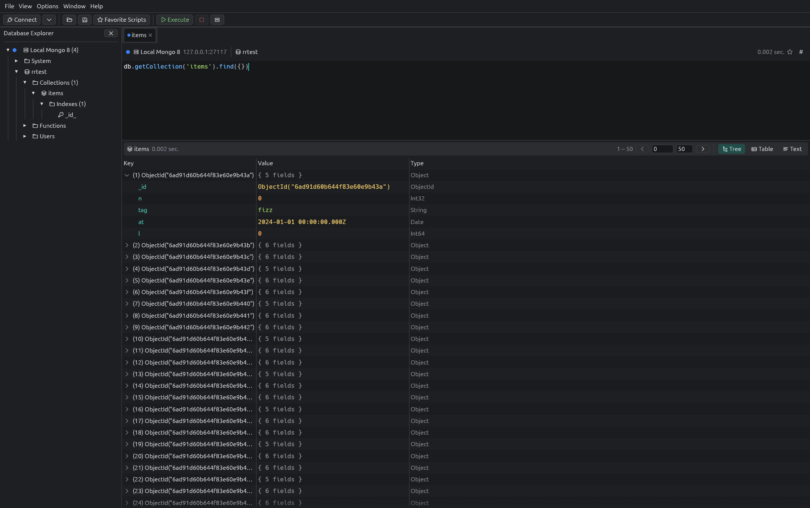
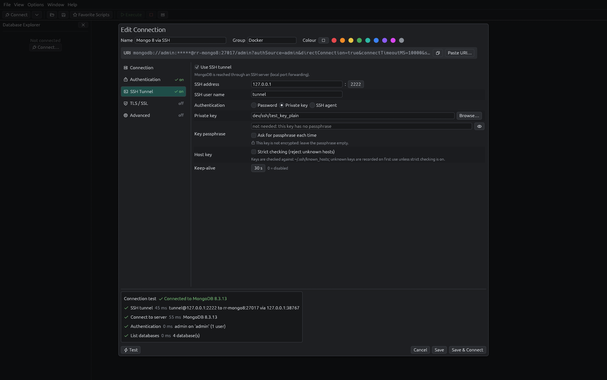
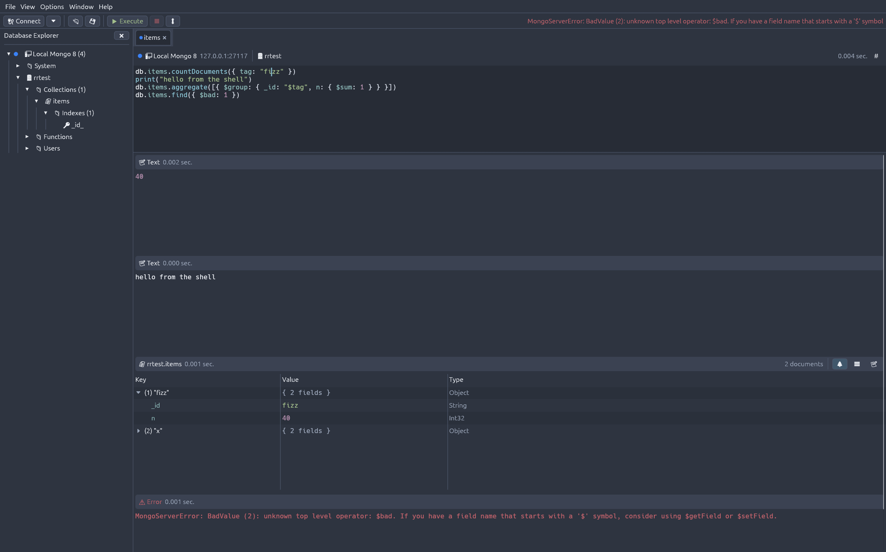
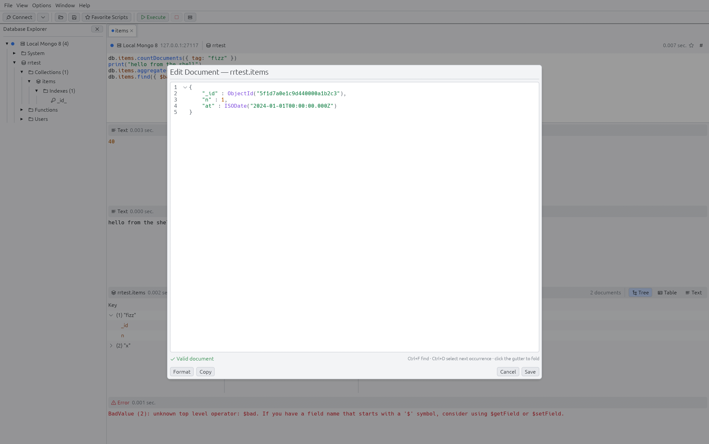

The Robo 3T workflow,
rebuilt in Rust.
A fast, native MongoDB GUI with an embedded shell, working SSH tunnels and support for every MongoDB from 3.6 to 8.x. One binary. No Electron.

Why Rustyrobo?
Robomongo / Robo 3T was the lightweight, shell-centric MongoDB GUI many of us loved. It is no longer maintained, its shell stopped at MongoDB 4.2 and SSH tunnels became unreliable.
Same interface
Explorer, query tabs, tree/table/text views, menus and shortcuts as you remember them.
Native and light
A single Rust binary with immediate-mode rendering: starts instantly, uses little memory.
Today's MongoDB
Modern driver for 4.4–8.x, automatic legacy driver for 3.6–4.2, SRV, TLS, X.509.
Everything you used, and more
Feature parity with Robo 3T first, then the things it always lacked.
A connection editor that tells you what's wrong
The connection dialog was redesigned from scratch.
- Sections with live status badges and inline validation
- Two-way connection string: paste a URI or copy the generated one
- Step-by-step test: SSH tunnel → server → authentication → databases
- Colour tags and groups to tell production from staging at a glance
- Searchable connection manager with keyboard navigation

Real themes
Each theme styles the whole interface, the JavaScript editor and the colours of BSON types.


Download
Prebuilt binaries for Linux, macOS and Windows are on the latest release.
Or build from source with Rust 1.88 or newer:
$ git clone https://github.com/Tatayoyoh/rustyrobo.git $ cd rustyrobo $ cargo build --release $ ./target/release/rustyrobo
Your existing Robo 3T connections can be imported from the connection manager (Import → From Robo 3T).